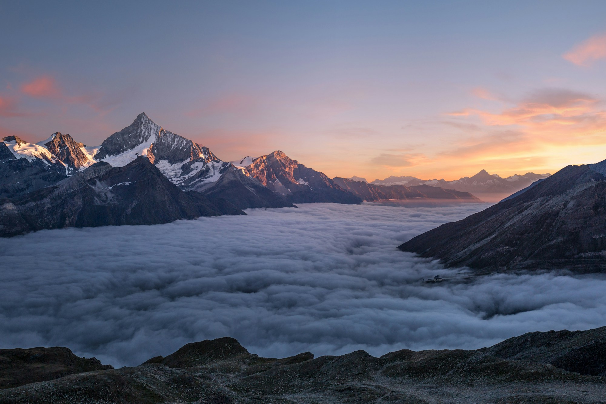
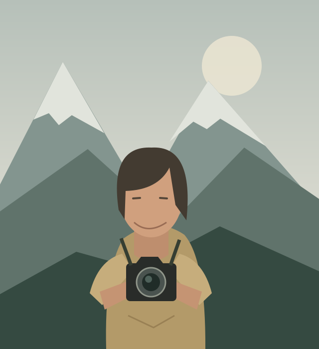

PHOTO ESSAY
First light
on the Tre Cime.
A Dolomites morning. Four hours in the dark,
and the light you remember for a lifetime.
FROM THE FIELD
Recent stories.
Places that stay with you.
Stories worth slowing down for.
Editorial concepts use local stock imagery and original short previews, not verified trips, photo counts or product tests.
TAKE THE LONG WAY
Somewhere out there.
Story counts are from the fictional brief. Each destination opens only its implemented local previews.
A FEW FRAMES I KEEP COMING BACK TO
Selected work.
A study in quiet places
and fleeting light.
Stock-image mood studies. Titles and capture settings are illustrative.
WHAT COMES ALONG
Less gear. Better stories.
A considered kit.
Concept reviews, not hands-on tests.
THE OTHER HALF OF THE FRAME
From RAW to final.
THE PROPOSED WORKFLOW
Editing a Dolomites
sunrise, step by step.
- White balanceA 300K warmer treatment.
- Exposure blendA proposed three-bracket workflow.
- Luminosity masksSeparate sky and foreground.
- Color gradingCooler shadows. Warmer highlights.
- Local adjustmentsLet the valley hold a little atmosphere.
SAMPLE SETTINGS · NOT EMBEDDED EXIF
Sony A7R V · 16–35mm f/2.8 GM
f/11 · 1/15s · ISO 100 · Tripod

ILLUSTRATED CHARACTER · NOT A REAL PHOTOGRAPHERBEHIND THE CAMERA
Elena Voss.
TRAVEL & LANDSCAPE PHOTOGRAPHER
Six years of early alarms, cold fingers, missed trains, and the occasional moment when everything falls into place.
Based in Portland, Oregon. Usually planning the next trip. This is a place for the stories behind the frames, the lessons learned slowly, and the joy of looking a little closer.
Elena, her travels and these statistics are fictional. Photography belongs to the credited source creators. National Geographic, Outdoor Photographer, PetaPixel and Lonely Planet mentions in the brief are unverified.
A WINDOW TO SOMEWHERE ELSE
Bring the landscape home.
Proposed museum-quality giclée on Hahnemühle paper · Worldwide shipping concept.
Sample pricing and frame mockups only. No inventory, orders, fulfilment or payments.